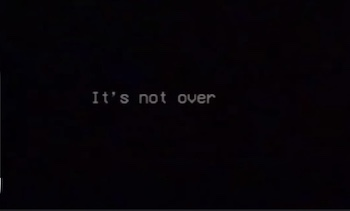
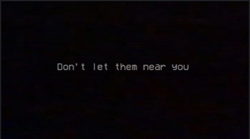
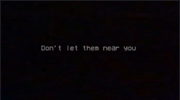
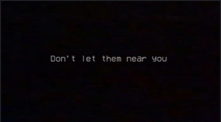

On This Website I Will Discuss the Sounds/Musical Aspects of The Horror Game Poppy Playtime
What Genre Would You Assume This Game Is Based Off Of Audio?
In the game Poppy Playtime, the player returns to the Playtime co. factory, to see that many of its toys, in including its mascot have turn into monsters that roam the factory.
Now the player must navigate through the factory to escape, whilst uncovering the story behind why the factory closed, and what happened to the other workers.
This is a paragraph.
This is the Mascot of Playtime.Co, Huggy Wuggy, and the game's first antagonist.
In the first chapter there is a hair-raising sequence where the main charcater is running from Huggy, inside the vents of the factory.
This sequence I believe translates well to the topic of Affect and Emotion. Huggy suddenly appears which leads to a chase, and despite seeming too big for this
environment, Huggy is able to follow the player closely.
In this chase sequence, the immediate gut reaction is to shock and to run, the emotion of the game is still fear but mixed with sharp-wit. The goal of this sequence is to
escape and detour Huggy Wuggy, so the player must act quickly in order to survive this situation. They must also use the terrain to their advantage and not become distracted.
Another emotion could be relief, ideally after Huggy Wuggy is defeated, as the player is now safe for the rest of the chapter.
On another topic, "fort-da" is also present within the game. If the player is killed, they are able to respawn. Even though this feature is prevelent in many games,
part of the lore of the game is that ominous messages appear such as these:


This is a paragraph.
These messgaes are ideal examples of "fort-da" as this respawn element gives the player control over how the navigate the game, and chances to learn from their mistakes.
Furthermore, these death messages, imply that respanwing or coming back to life is necessary to the actual storyline, and make this action feel less truamatic almost like a cycle
that is meant to be repeated.
I also believe that Poppy Playtime's environment and music are examples of the "The Reality Effect".Poppy Playtime utilizes distorted or "grainy" audios. Specifically, with old VHS tapes that enhance the story and gameplay. Which makes sense as the game falls in the
"analog horror" genre. The tapes are of the past employees and staff of the Playtime Co. Factory. I believe this feature give the game a "barthes-esque" effect where the user
becomes immersed in the game, since VHS tapes were popular during the 90s/2000s. These details make the factory and its workers seem like they are real and not completely fiction.
Additonally, the music and soundtrack of the game overall are unique to each environment and event, which makes everything seem more immersive
 
